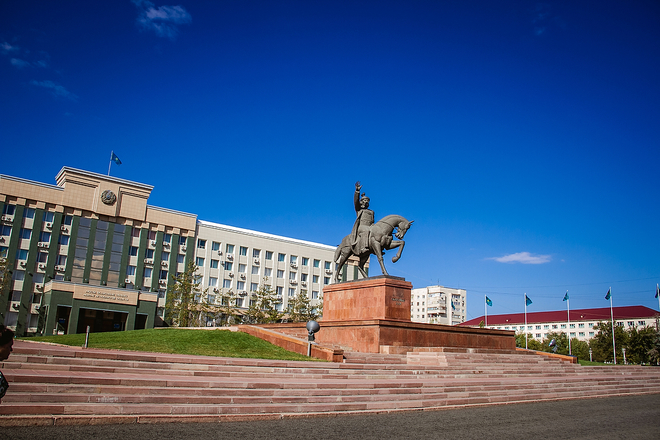
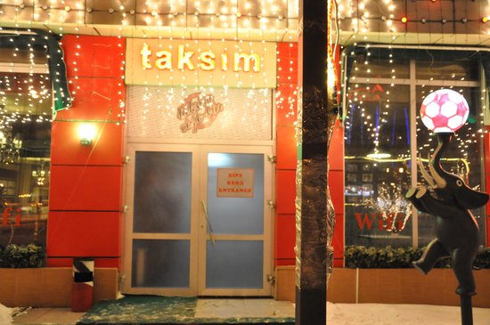

Walking in Aktobe – Places of interest and entertainments
KeruenCity
KeruenCity (formerly called Mega Aktobe) is a large shopping and entertainment center in the city of Aktobe. The test launch of MEGA Aktobe took place on September 10, 2009, and the final opening took place on October 16. The shopping center is located near the park of the First President of the Republic of Kazakhstan.
Park of the First President of Kazakhstan
The Central Park of Culture and Leisure named after the First President of the Republic of Kazakhstan is a park in the city of Aktobe, located in the central part of the city, along Abylkaiyr Khan Avenue. The park's area is 42 hectares. During the reconstruction in the park, a fountain with a diameter of 17 m was built and an artificial reservoir with an area of 7500 m² with a boat station,attractions in "Captain Brig" and a pedestrian bridge.
The museum of Aliya Moldagulava
The name of Aliya Moldagulova, who showed unprecedented courage and fortitude, gave her life for the sake of freedom of the Motherland, is dear not only to the Aktubians, but to all Kazakhstanis.
In Kazakhstan they honor the memory of Alia, in a number of cities of our country she has monuments, her name is named streets, and in the city of Aktobe a memorial museum is opened.
Nur Gasyr mosque
The "Nur Gasyr" mosque (Nur-Qasir Meshit) is a mosque designed for 3,500 worshipers, located along Abilkayir Khan Avenue, near the 12th microdistrict of the city of Aktobe.
In the building of the mosque there is also a regional museum "Rukhaniyat", a canteen and a madrasah for 25 students.
Planetarium
The main feature of the Aktyubinsk Regional Planetarium is licensed full-dome programs with a demonstration of the starry sky and the solar system. Sessions are conducted using images and videos that fill the entire inner surface of the dome, which create the effect of a full immersion. In the star hall of the planetarium, various astronomical phenomena are displayed with the help of several projection devices, such as solar and lunar eclipses, meteor showers, halos; Sunrise and sunset.
City Centre Aktobe
CITY Shopping Center (City Shopping Center) is a shopping center of Class A center located in the central part of Aktobe city, in 12th micro district, along Abilkaiyr Khan Avenue. Read more

Nurdaulet
"Nurdaulet" is a shopping center and entertainment complex in Aktobe. The shopping center has cafes and cooking, and there are children's playgrounds and a mini-zoo on its territory. Over the years, the shopping center was awarded the "Order of Friendship" I-degree (Moscow, 2010), the awards "European Quality" (Great Britain, 2009), "Best Company of the CIS" (2008), diploma "Leader of International Economics" (Moscow, 2007).
Park of Pushkin
Park named after Alexander Sergeevich Pushkin - a park of culture and recreation, located in the city of Aktobe on the street Karasai-batyr. The park is managed by LLP "Pushkin City Park". During the state holidays of the Republic of Kazakhstan the Pushkin Park is used as a place for holding festive events.
Alleys
Aktobe is full of different alleys which are located in different parts of the city. The most well-known is the new square near the river Sazdinka, along the 12 microdistrict. This alley is famous for its yards for both children and adults including treadmills and even ramps for skateboarding. The park is situated near water,that is why it is possible to enjoy the view of birds. The area is green because of trees, so fresh air is guaranteed.
Except this square, there are also some other alleys which include the square dedicated for heroes of World War 2 and the avenue of lovers with fountains and monuments.
The central stadium named after Koblandy-batyr
The central stadium is the football stadium in Aktobe, the home stadium of the football club Aktobe. It was built in 1975. It was opened on August 28, 1975 with the match of the club "Aktyubinets" (now "Aktobe") with CSKA Moscow, won by CSKA with a score of 1: 0. The stadium is one of the most visited in the country. Can accommodate up to 13 500 people on its territory. It is intended only for football matches (no treadmills).
Monuments
Monuments of the city of Aktobe are also sights of Aktobe, which could interest the guests of the city. For example, in the city there is a monument to Khan the Younger Zhouz, an outstanding figure, a commander, a diplomat - Abulkhair Khan; Mausoleum of one of the legendary batyrs of the Kazakh people - Tama Eset batyr Kokiuly; The memorial of the legendary daughter of the Kazakh people, the heroine of the Soviet Union - Alie Moldagulova; Monument to the victims of repression 1930-1950 and others.

Hotels
Amsterdam,Dastan,Sultan and Aktobe are the most common hotels in the city, which offer various prices and different living conditions. "Amsterdam" Hotel is considered to be the best (5* hotel), but with bigger expenditures.

|
Lokomotiv
Lokomotiv is the cinema located near the Retro park. It offers up-to-date movies and pleases visitors with cheap tickets.However, most locals prefer going to Kinopark 7, which can be found in the KeruenCity.
Strike
This place is famous for suggesting different entertainment activities such as bowling, karaoke or even a venue as a night club. Especially, Strike is popular among youngsters.
Link to its instagram page
Abulkhayyr Khan prospect
Prospect Abilkayyr-khan is the central avenue of the city of Aktobe. It is located in the western part of Aktobe, the center of the New City.It is the most beautiful and crowded area with a big singing fountain,an alley and various small shops.
|  |
Theaters
The most popular theaters in Aktobe are those mentioned below:
The Aktobe Oblast Puppet Theater "Alakai". It was opened on November 29, 1985. Over 25 years of work, more than 60 performances have been staged, and over a million viewers have been served.
The Aktobe Oblast Drama Theater named after Tahavi Akhtanov is a drama theater in the city of Aktobe. It is located at st. Akhtanova, 52.
The Aktyubinsk Regional Philharmonic Society. There is an auditorium for 401 seats. The stage is equipped with modern sound and lighting equipment.Weekly concerts are held for guests and residents of the city, taking into account the musical tastes of the population.Restaurants
Aktobe’s restaurants differ with their cuisine: the first ones have Kazakh national dishes prevailing in their menu, the second – European ones, while the third – Asian, with accent to Japanese ones. In addition some of them may offer na extended menu, which includes many world’s cuisines. It should be noted, that, some restaurants may boast with an excellent wine list or wide choice of beer brands.These are the most popular restaurants: Altyn Saray, Atameken, Saltanat Sarayi,Saz Syrnay,Ulytau, Zamok, City Restaurant&Lounge, Fudzi,Assorti, KhanShatyr,etc.

|
Cafes
Taksim, Traveller's coffee, Garage, Pryanik,Burger King, Kompot - these are the most popular cafes in Aktobe, but again they can be different according to the tastes of locals. Aforementioned ones are hughlighted according to their inner style and cuisine.
|  |
Recreational centres
Aktobe is also famous for recreation centers that are located in the outskirts of the city. Solnechnyy and Greenland are considered to be the best centers where you can eat deliciously, relax in nature and enjoy a pleasant weekend, reserving a private house. In winter you can visit the Tau recreation center, which offers different winter games including the descent from the mountain on big cylinders.
If you want to know about our city more,then sign up or log in to our site. You will see a lot of information available!